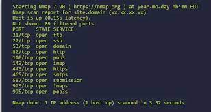
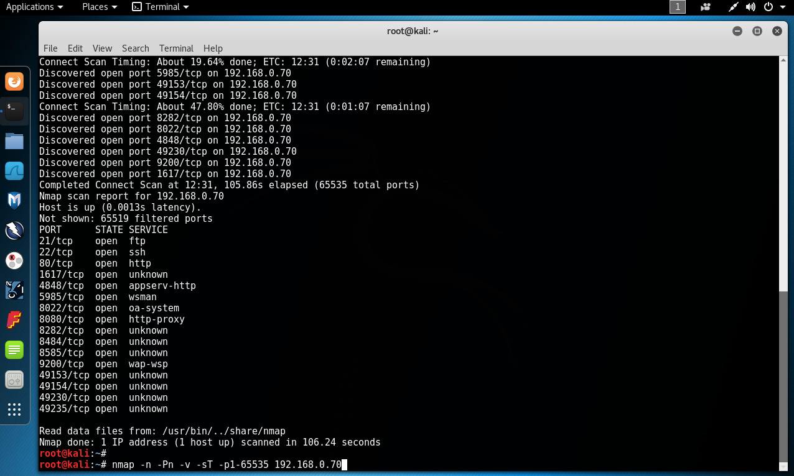
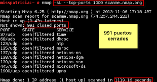

Preguntas y respuestas
Preguntas
Ejemplos de principales tipos de ciberdelincuencia
Algunos de los ejemplos más comunes de ciberdelincuencia con los que nos podemos ver afectados son, por ejemplo, los robos de datos personales, acceso a nuestros datos y cuentas bancarias, chantajes a través de información personal, mensajes de spam y fraudes por correo electrónico o mensajes de texto.
Motivos del aumento de los ciberdelitos
Uno de los principales motivos de este aumento en ciberdelincuencia es que el ciberdelito es mucho más barato que los delitos convencionales, el narcotráfico o el tráfico de armas son mucho más caros de llevar a cabo.
Quiénes suelen ser los ciberdelincuentes
Las mentes detrás de los delitos informáticos, son llamados comúnmente “Ciberdelincuentes”. Para definir este término, podríamos decir que un Ciberdelincuente es toda persona que realiza actividades delictivas en internet, como la apropiación ilegítima de información, el acceder a redes privadas, estafas y engaños.
Cómo se les captura
A pesar de lo que puede parecer una tarea insuperable, los hackers son humanos y cometen errores. A menudo son estos errores por descuido los que hacen tropezar a los delincuentes y dejan un rastro de pruebas que la policía puede seguir.
Motivaciones de los ciberdelincuentes
Las motivaciones de los ciberdelincuentes pueden ser bastante simples. Las dos principales son el dinero y la información. Aparte de eso, el conjunto de motivos, menos frecuente pero más amplio, suele clasificarse como «FIG» (Fun, Ideology, and Grudges) que en español sería diversión, ideología y rencor.
Qué es la DeepWeb, y diferencia con la DarkWeb
En resumen, la Deep Web son los contenidos de internet que no están indexados, y son la mayoría. Darknet es una red cifrada, para acceder a la cual requieres herramientas y conocimientos específicos. Por último, la Dark Web son los sitios alojados en la Darknet.
Qué capas del modelo OSI son implementadas por el sistema operativo (software) y cuáles están implementadas por hardware
Describe qué es y cómo se utiliza NMap. Mostrar capturas de pantalla.
Nmap es un programa de código abierto, creado en 1998 por Gordon Lyon, que sirve para realizar escaneos de redes, puertos y dispositivos.
Describe qué es y cómo funciona el escaneo ARP
El Protocolo ARP, en la actualidad, nos sirve para mapear direcciones IP/MAC, es decir que permite a un dispositivo conectado a una red LAN obtener una ruta MAC de otro aparato conectado a la misma red con una dirección IP conocida.
Describe en qué consiste el escaneo de puertos TCP. Mostrar captura de pantalla de su funcionamiento. Se puede usar cualquier programa de la documentación u otro distinto de Linux o Mac.
El análisis de puertos se utiliza para comprobar qué puertos de la red están abiertos y pueden recibir o enviar datos. También se utiliza para enviar paquetes a puertos concretos de un anfitrión y analizar respuestas para identificar vulnerabilidades.
Describe cómo funciona el escaneo de puertos UDP. Mostrar captura de pantalla de su funcionamiento. Se puede usar cualquier programa de la documentación u otro distinto de Linux o Mac.
Los escáneres UDP, como los TCP, envían un paquete UDP a varios puertos en el host de destino y evalúan los paquetes de respuesta para determinar la disponibilidad del servicio en el host. Al igual que con los escaneos TCP, recibir un paquete de respuesta indica que el puerto está abierto.
Describe los principales tipos de ataques de red
¿Qué son las vulnerabilidades IDOR?
Las vulnerabilidades IDOR (Insecure Direct Object References) se refieren a una clase de vulnerabilidades de seguridad en aplicaciones web que ocurren cuando un sistema no valida o autentica adecuadamente las referencias a objetos directos, como archivos, bases de datos o recursos internos.
¿En qué consiste el SQL injection?
El SQL Injection (Inyección de SQL) es una vulnerabilidad de seguridad común que afecta a las aplicaciones web que interactúan con bases de datos. Consiste en aprovechar una entrada de datos no validada o mal escapada en una consulta SQL para manipular su funcionamiento original.
¿En qué consiste el ataque XSS?
El ataque XSS (Cross-Site Scripting) es una vulnerabilidad común en aplicaciones web que permite a los atacantes inyectar código malicioso en páginas web visitadas por otros usuarios. Consiste en aprovechar la falta de validación o filtrado adecuado de los datos ingresados por el usuario, que luego se muestran en la página sin escapar o codificar correctamente.
¿Cómo se puede proteger una red wifi?
¿Cómo realizan hackeos por ingeniería social?
¿En qué consiste la autenticación multifactor?
La autenticación multifactor (AMF), también conocida como autenticación de dos factores (2FA) o autenticación de múltiples pasos, es un método de seguridad que requiere que los usuarios proporcionen más de una forma de autenticación para verificar su identidad antes de acceder a un sistema o servicio.
¿Qué es el Credential Stuffing?
Credential stuffing es un tipo de ataque cibernético en el que los atacantes intentan utilizar credenciales de inicio de sesión comprometidas, como nombres de usuario y contraseñas, para acceder a cuentas en diversos servicios en línea. Este ataque se basa en el hecho de que muchas personas reutilizan las mismas combinaciones de nombre de usuario y contraseña en múltiples plataformas.
1. Capa fisica
2. Capa de enlace de datos
3. Capa de red
4. Capa de transporte
5. Capa de sesión
6. Capa de presentacion
7. Capa de aplicación



1. Ataques de denegación de servicio (DoS): Se centran en inundar un sistema o red con un gran volumen de tráfico o solicitudes, sobrecargándolos y dejándolos inaccesibles para los usuarios legítimos.
2. Ataques de fuerza bruta: Consisten en intentar adivinar credenciales o contraseñas mediante la prueba exhaustiva de todas las combinaciones posibles hasta encontrar la correcta.
3. Ataques de interceptación: Los atacantes intentan interceptar y leer información confidencial, como contraseñas o datos sensibles, mientras viaja a través de una red, generalmente utilizando técnicas de escucha o "sniffing".
4. Ataques de phishing: Los atacantes se hacen pasar por entidades confiables para engañar a los usuarios y obtener información confidencial, como nombres de usuario, contraseñas o datos financieros.
1. Utilizar una contraseña segura y cambiarla regularmente: La contraseña de la red Wi-Fi debe ser lo suficientemente compleja y larga para evitar que sea adivinada. Se recomienda utilizar una combinación de letras, números y caracteres especiales, y cambiarla periódicamente.
2. Utilizar el cifrado WPA2: Se recomienda utilizar el cifrado WPA2 para proteger la red Wi-Fi, ya que es más seguro que otros tipos de cifrado. Este cifrado utiliza un sistema de autenticación más robusto y una clave compartida más segura.
3. Desactivar la difusión del SSID: Al desactivar la difusión del nombre de la red Wi-Fi (SSID), se evita que la red sea visible para otros dispositivos cercanos que intenten conectarse a una red.
4. Limitar el acceso a la red: Se pueden utilizar medidas como la asignación de direcciones IP estáticas o el filtrado de direcciones MAC para limitar el acceso a la red sólo a dispositivos autorizados.
1. Phishing: Los hackers envían correos electrónicos o mensajes falsos que parecen legítimos, suplantando la identidad de una organización o persona confiable. Estos mensajes solicitan información personal, como contraseñas o números de tarjetas de crédito, o inducen a los destinatarios a hacer clic en enlaces maliciosos que pueden instalar malware.
2. Ingeniería social telefónica: Los hackers se hacen pasar por alguien de confianza, como un empleado de soporte técnico o un representante de servicio al cliente, y persuaden a la víctima para que revele información confidencial o realice acciones no autorizadas, como proporcionar contraseñas o acceder a una red.
3. Spear phishing: Esta técnica implica el envío de mensajes personalizados y convincentes a individuos o grupos específicos. Los hackers investigan a sus objetivos para obtener información personal y luego utilizan esa información para crear mensajes personalizados y creíbles que aumenten las posibilidades de éxito del ataque.
4. Ingeniería social en persona: Los hackers pueden intentar establecer relaciones de confianza con las personas en persona, en eventos sociales o profesionales, con el objetivo de obtener información confidencial o acceso a áreas restringidas.
5. Obtención de información de redes sociales: Los hackers utilizan la información disponible en perfiles públicos de redes sociales para obtener datos personales y utilizarlos en ataques de ingeniería social más dirigidos.